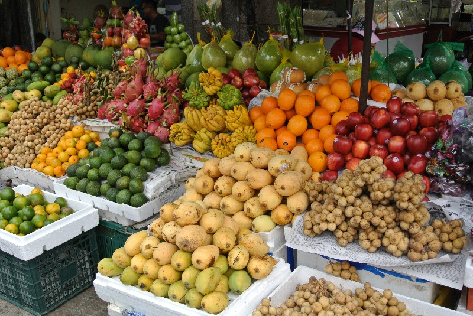
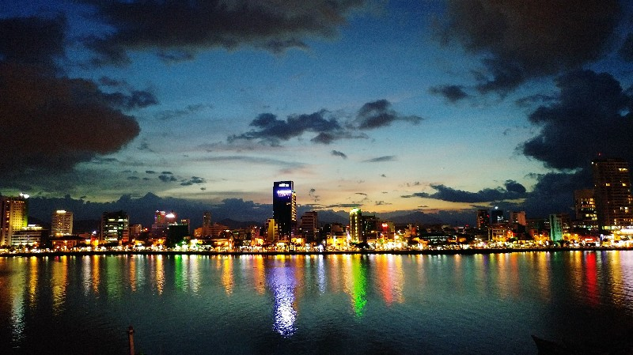

<조금 느린 여행, 다낭>
하루, 일주일, 한 달이 너무도 빠르게 지나가는 한국과 달리, 다낭에서는 조금 천천히, 여유 있는 시간을 가져 보자. 한국으로 돌아가면 언제 그랬냐는 듯 다시 바쁜 일상을 보내겠지만 이곳, 다낭에서 만큼은 하루 24시간을 오롯이 나만의 시간으로 채워 보자. 다낭에서 조금 느린 여행을 하는 법.
다낭 여행을 즐기는 법
▶비치파라솔 아래에서 책 읽기

▶쌀국수 맛집 찾아보기

▶열대 과일 먹기

▶노을 지는 한 강 거닐어 보기
